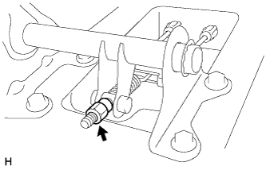
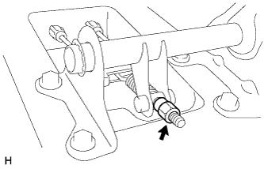

СТОЯНОЧНЫЙ ТОРМОЗ В СБОРЕ > ПОВТОРНАЯ СБОРКА |
| 1. УСТАНОВИТЕ ШТИФТ ПРУЖИННОГО ФИКСАТОРА КОЛОДКИ СТОЯНОЧНОГО ТОРМОЗА |
Установите штифт пружинного фиксатора колодки стояночного тормоза (с передней стороны).
Установите штифт пружинного фиксатора колодки стояночного тормоза (с задней стороны).
| 2. НАНЕСИТЕ ТЕРМОСТОЙКУЮ КОНСИСТЕНТНУЮ СМАЗКУ |
Нанесите тонким слоем термостойкую консистентную смазку на поверхности опорного диска, вступающие в контакт с колодкой, как показано на рисунке.
| *1 | Термостойкая консистентная смазка |
| 3. УСТАНОВИТЕ РЫЧАГ ПРИВОДА ЛЕВЫХ КОЛОДОК СТОЯНОЧНОГО ТОРМОЗА |
Нанесите тонким слоем термостойкую консистентную смазку на поверхности рычага привода колодок стояночного тормоза, вступающие в контакт с колодкой стояночного тормоза № 2 в сборе.
 |
Установите рычаг привода колодок стояночного тормоза и шайбу на колодку стояночного тормоза № 2 в сборе и закрепите их новой разрезной шайбой, как показано на рисунке.
 |
С помощью плоского щупа измерьте зазор между колодкой стояночного тормоза № 2 и рычагом привода колодок стояночного тормоза.
| Толщина регулировочной шайбы | Толщина регулировочной шайбы |
| 0,2 мм (0,00787 дюйма) | 0,5 мм (0,0197 дюйма) |
| 0,3 мм (0,0118 дюйма) | 0,6 мм (0,0236 дюйма) |
| 0,4 мм (0,0157 дюйма) | 0,9 мм (0,0354 дюйма) |
| 4. УСТАНОВИТЕ КОЛОДКУ СТОЯНОЧНОГО ТОРМОЗА № 2 В СБОРЕ С РЫЧАГОМ ПРИВОДА КОЛОДОК СТОЯНОЧНОГО ТОРМОЗА |
 |
С помощью круглогубцев подсоедините трос привода стояночного тормоза № 3 в сборе к рычагу привода колодок стояночного тормоза, как показано на рисунке.
| 5. УСТАНОВИТЕ СТЯЖНУЮ ВОЗВРАТНУЮ ПРУЖИНУ КОЛОДКИ СТОЯНОЧНОГО ТОРМОЗА |
Установите стяжную возвратную пружину колодки стояночного тормоза на колодку стояночного тормоза № 2 в сборе.
| 6. УСТАНОВИТЕ ЛЕВУЮ КОЛОДКУ СТОЯНОЧНОГО ТОРМОЗА № 1 В СБОРЕ |
Подсоедините стяжную возвратную пружину колодки стояночного тормоза, чтобы установить колодку стояночного тормоза № 1 в сборе.
| 7. УСТАНОВИТЕ ВИНТОВОЕ ПРИСПОСОБЛЕНИЕ ДЛЯ РЕГУЛИРОВКИ ЗАЗОРОВ КОЛОДОК СТОЯНОЧНОГО ТОРМОЗА |
Нанесите тонким слоем термостойкую консистентную смазку на поверхности комплекта винта регулировки зазоров колодок, как показано на рисунке.
| *1 | Термостойкая консистентная смазка |
Установите винтовое приспособление для регулировки зазоров колодок стояночного тормоза.
| 8. УСТАНОВИТЕ ЛЕВУЮ КОЛОДКУ СТОЯНОЧНОГО ТОРМОЗА № 2 В СБОРЕ |
Установите колодку стояночного тормоза № 2 в сборе на опорный диск с помощью тарелок пружинного фиксатора колодки стояночного тормоза и пружинного фиксатора колодки стояночного тормоза.
| 9. УСТАНОВИТЕ ЛЕВУЮ РАЗЖИМНУЮ ПЛАНКУ КОЛОДОК СТОЯНОЧНОГО ТОРМОЗА |
Установите разжимную планку колодок стояночного тормоза и пружину сжатия разжимной планки колодок стояночного тормоза.
| 10. УСТАНОВИТЕ ЛЕВУЮ КОЛОДКУ СТОЯНОЧНОГО ТОРМОЗА № 1 В СБОРЕ |
Установите колодку стояночного тормоза № 1 в сборе на опорный диск с помощью тарелок пружинного фиксатора колодки стояночного тормоза и пружинного фиксатора колодки стояночного тормоза.
| 11. УСТАНОВИТЕ СТЯЖНУЮ ВОЗВРАТНУЮ ПРУЖИНУ КОЛОДКИ СТОЯНОЧНОГО ТОРМОЗА |
Установите 2 стяжных возвратных пружины колодок стояночного тормоза.
| 12. ПРОВЕРЬТЕ УСТАНОВКУ СТОЯНОЧНОГО ТОРМОЗА |
Проверьте правильность установки каждой детали.
| *A | Левая сторона | *B | Правая сторона |
| *a | Передняя сторона | - | - |
| 13. УСТАНОВИТЕ ЗАДНИЙ ТОРМОЗНОЙ ДИСК |
Совместите метки и установите задний тормозной диск.
| 14. ПОДСОЕДИНИТЕ КОЛЕСНЫЙ ТОРМОЗНОЙ ЦИЛИНДР ЛЕВОГО ЗАДНЕГО ДИСКОВОГО ТОРМОЗА В СБОРЕ |
Подсоедините колесный тормозной цилиндр заднего дискового тормоза и закрепите 2 болтами.
| 15. ПРОВЕРЬТЕ ХОД РЫЧАГА СТОЯНОЧНОГО ТОРМОЗА |
Полностью поднимите рычаг стояночного тормоза, чтобы включить стояночный тормоз.
Опустите рычаг, чтобы отпустить стояночный тормоз.
Медленно до упора затяните рычаг стояночного тормоза и подсчитайте число щелчков.
| 16. ОТРЕГУЛИРУЙТЕ ХОД РЫЧАГА СТОЯНОЧНОГО ТОРМОЗА |
Для моделей с автоматической трансмиссией:
Снимите вещевой ящик в облицовке туннеля пола в сборе (Нажмите здесь).
Для моделей с механической трансмиссией:
Снимите вещевой ящик в облицовке туннеля пола в сборе (Нажмите здесь).
Для моделей с холодильной камерой:
Снимите вещевой ящик в облицовке туннеля пола в сборе (Нажмите здесь).
Полностью отпустите рычаг стояночного тормоза.
|  |
Ослабьте регулировочную гайку, чтобы полностью отпустить трос привода стояночного тормоза.
Временно установите гайки ступицы.
 |
Поверните регулятор и разводите колодки до тех пор, пока диск не будет зафиксирован.
 | Регулятор сводит колодки |
 | Регулятор разводит колодки |
Поверните регулятор и сведите колодки таким образом, чтобы диск мог вращаться плавно.
Проверьте, не вызывает ли колодка прихвата тормозов.
Вставьте затычку отверстия.
Отверните гайки ступицы.
|  |
Поверните регулировочную гайку до тех пор, пока не будет обеспечен надлежащий ход рычага стояночного тормоза.
Затяните рычаг рычаг стояночного тормоза 3-4 раза и проверьте ход рычага стояночного тормоза .
Проверьте, не прихватывает ли тормоза.
Убедитесь, что при поднятии рычага стояночного тормоза включается контрольная лампа состояния тормозной системы.
Для моделей с автоматической трансмиссией:
Установите вещевой ящик в облицовке туннеля пола в сборе (Нажмите здесь).
Для моделей с механической трансмиссией:
Установите вещевой ящик в облицовке туннеля пола в сборе (Нажмите здесь).
Для моделей с холодильной камерой:
Установите вещевой ящик в облицовке туннеля пола в сборе (Нажмите здесь).
| 17. УСТАНОВИТЕ ЛЕВОЕ ЗАДНЕЕ КОЛЕСО |